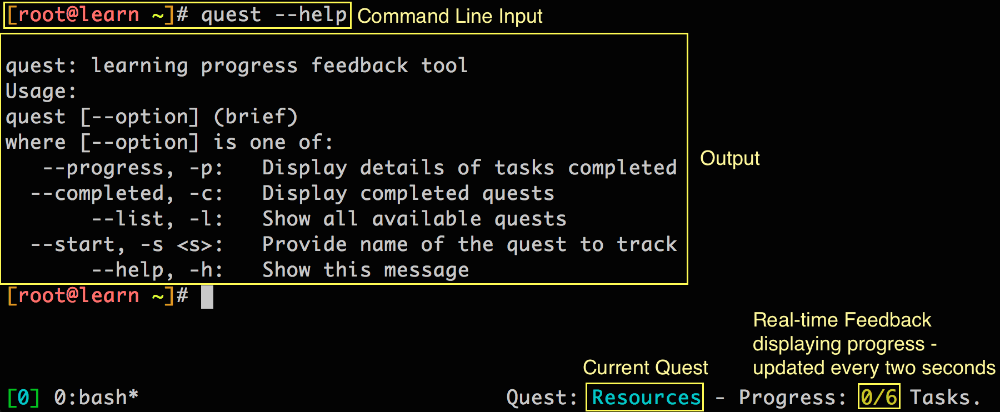

Welcome
Quest Objectives
- Recognize the learning context of the Puppet Enterprise Learning Virtual Machine (VM)
- Learn about the value of Puppet Open Soure and Puppet Enterprise
- Identify and interpret the Quest structure and tool
Getting Started
In this quest we'll introduce you to the context of learning Puppet through this Learning VM where we'll discuss just the right amount of information to get you started, as we don't want to spoil all the fun as you're about to embark on this learning adventure. When you're ready to get started, type the following command:
quest --start welcome
The Puppet Enterprise Learning Virtual Machine
Any sufficiently advanced technology is indistinguishable from magic.
-Arthur C. Clarke
Welcome to the Quest Guide for the Puppet Enterprise Learning Virtual Machine (VM). This guide is your companion to learning Puppet using the Learning VM. You should have started up the VM by now, and have an IP Address for the VM.
Use the IP address to ssh to the VM. We do this for convenience and it's essential for you to get the most out of the Learning VM and this Quest Guide.
To SSH to the VM, on a Linux system or a Mac, you can open a Terminal application and run the following command:
ssh root@<ip-address>
Where <ip-address> is to be replaced by the IP address for your Learning VM that you noted down at the end of the previous chapter.
If you are using a Windows computer, please use an SSH client. We recommend Putty.
Here are the credentials to log in to the Learning VM via SSH:
username: root
password: puppet
Once you have, feel free to take a look around. You will see the Learning VM is fairly typical of a Unix-based operating system, essentially containing a filesystem populated with many of the usual directories. You should be aware though, some services are running in the background, including the SSH service you're using to access this Learning VM from your own terminal.
We should give you a heads up; since you're logged in to the root account, which is garnished by the uid => 0, means you carry the mark of a Superuser. Your account gives you the ability to change just about anything you would like in this Learning VM, just as you would if you were tasked with administrating a machine.
By following this Quest Guide, you will learn how Puppet allows you to use these privileges easily and effectively.
What is Puppet?
So what is Puppet, and why should you care? At a high level, Puppet manages your servers' configurations. You describe your machine configurations in an easy-to-read declarative language, known as the Puppet DSL, and Puppet will bring your systems into the desired state and keep them there.
Puppet Enterprise is a complete configuration management platform, with an optimized set of components proven to work well together. It combines Puppet (including a preconfigured production-grade puppet master stack), a web console for analyzing reports and controlling your infrastructure, powerful orchestration features, cloud provisioning tools, and professional support.
It may seem a lot easier to "just run a command" to effect a change in configuration, or perhaps writing a script that executes a series of commands looks like a more effective way to manage the configuration of a system. This is true, as long as you are only concerned about a single change, or changes to a single system (or a few). The true power of Puppet is that it allows you to describe all the details of the configuration for multiple machines in a composable manner, and allows you to manage the configuration of multiple machines (think hundreds or thousands) without having to write complicated scripts that are hard to comprehend; or maintaining an inventory of all your systems, and logging in to each system in turn to run the required commands or scripts. Puppet automates the process of configuring your systems and keeping them configured exactly as you need them to be. But a journey of a thousand miles starts with a step - this Learning VM will get you started by means of examples that help you configure the VM. While doing the exercises, imagine the possibilities in using what you learn to be able to manage hundreds or thousands of systems in an effortless, intuitive manner!
Task 1 :
Before we dig any deeper, let's check an see what version of Puppet Enterprise we are running on this Learning VM. Type the following command:
puppet -V # That's a capital 'V'
You will see something like the following:
3.4.3 (Puppet Enterprise 3.2.1)
What the above indicates is that Puppet Enterprise 3.2.1 is installed on the Learning VM, which leverages Puppet version 3.4.3. Puppet Enterprise includes more than 40 open source projects, including Puppet, MCollective, PuppetDB, Hiera, and others that we’ve integrated, certified, performance-tuned, and security-hardened to make it a complete solution suitable for automating mission-critical enterprise infrastructure. In addition, it includes several capabilities found only in Puppet Enterprise, including event inspection, supported modules, role-based access control, certification management and VMware cloud provisioning.
What is a Quest?
Up to this point we've provided you with some basic context of this Learning VM and what Puppet is. We'll continue to dive into greater detail about these topics in future quests. Wait a minute! What's a quest? That's a great question! A Quest is a structured tutorial consisting of a number of interactive tasks that will help you learn about a topic related to Puppet.
Each Quest includes a number of Tasks that give you a hands-on opportunity to apply what you have learnt. You have already finished a task by now, since the first task was to execute the puppet -V command earlier. But how do you keep track of everything as you progress? What if you forget what quest you are on? These are all great questions and that's why we specifically created a 'Quest Tool' for this Learning VM to help you when you're in need.
The Quest Tool
To monitor your status as you progress through these Quests, we've created a quest tool you can use on the command line in the Learning VM. However, this quest tool is not part of Puppet itself. We have included this tool in the Learning VM to provide you with real-time feedback as you progress through the many Quests and Tasks on your journey to learn Puppet.
Task 2 :
To explore the command options for the quest tool, type the following command:
quest --help
The quest --help command provides you with a list of all the options for the quest command. You can invoke the quest command with each of those options, such as:
quest --progress # Displays details of tasks completed
quest --completed # Displays completed quests
quest --list # Shows all available quests
quest --start <name> # Provide the name of a quest to start tracking progress
Task 3 :
Let's find out how much progress you have made thus far! Execute the following command:
quest --progress
Using the quest tool is entirely optional, but we have integrated it into the first few quests to help you out if needed.
Typing `clear` into your terminal will remove everything on your terminal screen.
In addition to the quest commandline tool, we have also integrated real-time feedback into the VM, which is displayed in the bottom-right corner of the terminal, as seen in Figure 1.

Figure
Review
In this introductory quest we provided a very high level explanation of what Puppet is, what a quest is, and how to use the quest tool. As you progressed through this quest, you learned about the mechanics of successfully completing a quest by means of completing the associated tasks. We hope you have a general understanding of how to complete a quest and what is in store for you on your learning journey.